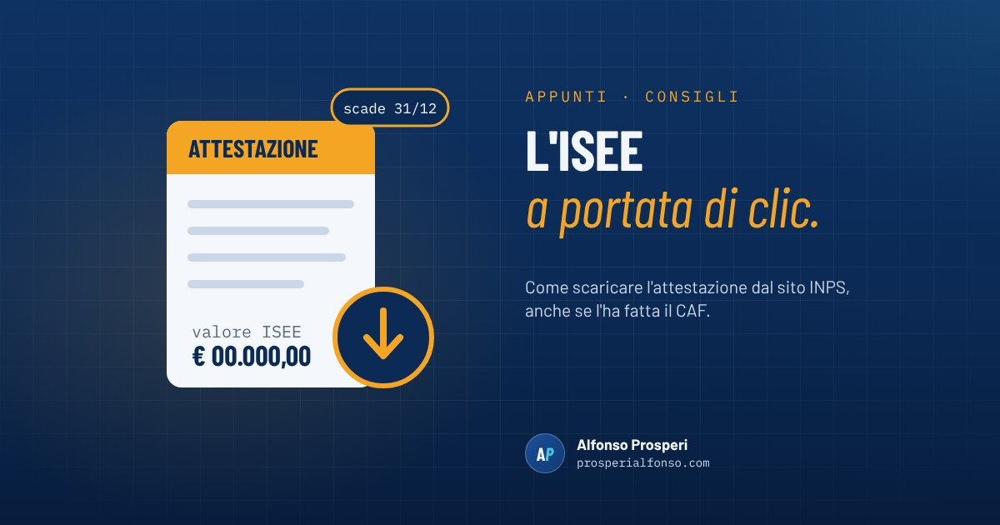

L'ISEE serve per tantissime cose: bonus, assegni, mense scolastiche, agevolazioni sulle bollette, tasse universitarie. Ogni volta che lo chiedono, bisogna presentare l'attestazione ISEE rilasciata dall'INPS. La buona notizia è che si può scaricare da soli, online, anche se la domanda l'ha presentata un CAF.
DSU e attestazione: qual è la differenza
La DSU (Dichiarazione Sostitutiva Unica) è la dichiarazione con i dati della famiglia: chi vive in casa, redditi, patrimonio, conti e immobili. L'attestazione ISEE è il documento che l'INPS emette dopo aver elaborato la DSU, con il valore ISEE calcolato. Di solito arriva qualche giorno dopo la presentazione.
L'ISEE ordinario scade il 31 dicembre di ogni anno, qualunque sia il mese in cui l'hai fatto. Per questo a gennaio conviene rifarlo subito, soprattutto se ricevi prestazioni che lo richiedono.
Cosa serve per accedere
Per entrare nei servizi INPS ti serve un'identità digitale: SPID, CIE (la carta d'identità elettronica) oppure CNS. Con lo stesso accesso puoi vedere le DSU presentate per il tuo nucleo familiare, anche quelle inviate tramite un CAF o un altro intermediario.
Come scaricare l'attestazione
- Vai sul sito dell'INPS e cerca il Portale unico ISEE.
- Accedi con SPID, CIE o CNS.
- Apri la sezione per consultare le DSU e le attestazioni: trovi l'elenco di quelle presentate, con lo stato di ciascuna.
- Seleziona quella che ti interessa e scarica l'attestazione in PDF.
Puoi cercare anche le DSU degli anni passati o quelle annullate e rettificate, utile se un ente ti chiede un documento vecchio.
E se vuoi farlo da solo: l'ISEE precompilato
Dal 2020 l'INPS mette a disposizione l'ISEE precompilato: molti dati (redditi, saldi e giacenze dei conti, immobili) arrivano già inseriti dall'INPS e dall'Agenzia delle Entrate. Tu compili la parte sul nucleo familiare, controlli il resto e invii. Ogni componente maggiorenne deve dare il consenso all'uso dei propri dati, accedendo con la sua identità digitale o tramite delega.
Il vantaggio è che non devi recuperare tutti i saldi dei conti: il rischio, se non controlli, è di confermare dati sbagliati. Se la famiglia ha una situazione complicata (separazioni, figli fuori casa, beni all'estero), un CAF resta la scelta più tranquilla.
Quale ISEE ti serve
- Ordinario: quello standard, per la maggior parte delle prestazioni.
- Minorenni: per le prestazioni rivolte ai figli, quando i genitori non sono sposati né conviventi.
- Università: per borse di studio e tasse universitarie.
- Socio sanitario e socio sanitario residenze: per assistenza a persone con disabilità o non autosufficienti, anche in struttura.
- Corrente: si può chiedere quando la situazione economica è cambiata molto rispetto all'anno di riferimento, per esempio dopo la perdita del lavoro.
Tre consigli
- Salva il PDF dell'attestazione sul telefono o nel cloud: te lo chiederanno più volte durante l'anno.
- Se trovi un errore, non aspettare: puoi presentare una nuova DSU che sostituisce quella sbagliata.
- Segna in calendario il 31 dicembre, così a inizio anno ricordi di rinnovarlo.